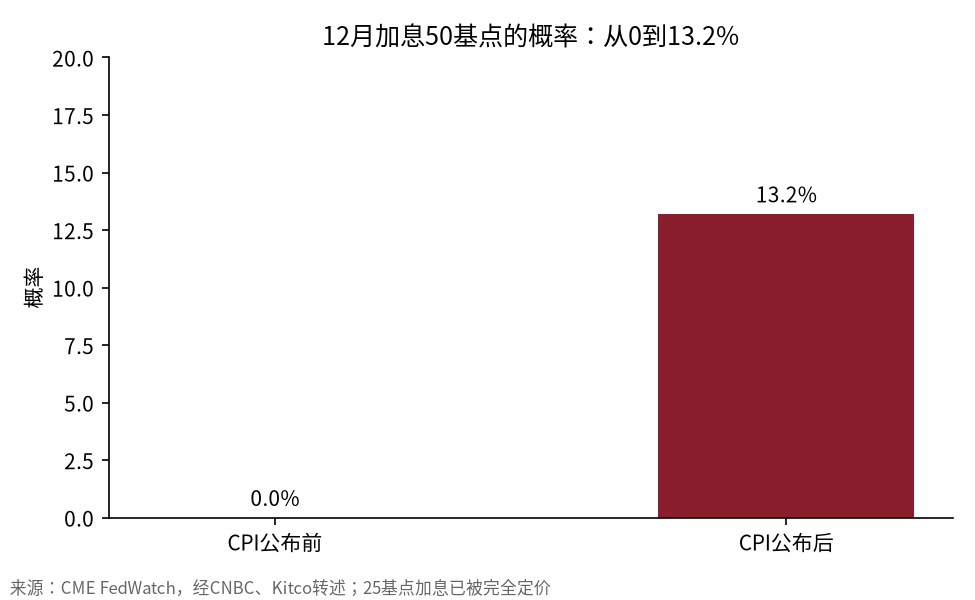
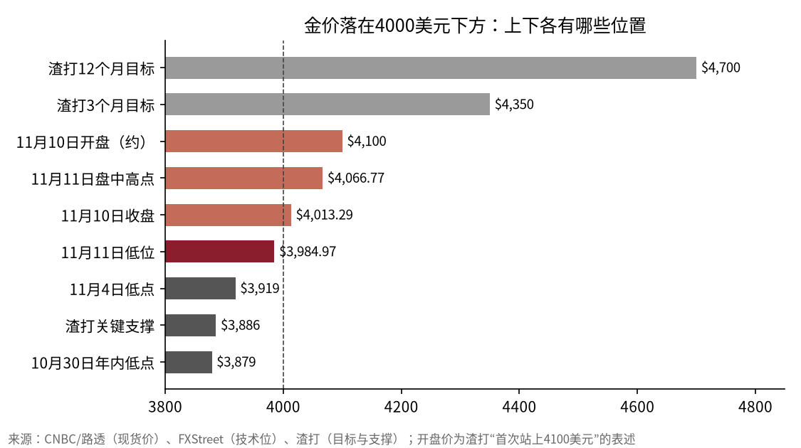

两天从4100美元跌破4000美元：金价在给12月的加息重新定价
10月CPI超预期后，现货金两个交易日累计下跌约4.1%，周三最低报3984.97美元。通胀走高本该利好黄金，这次却成了利空，原因在利率：加息25基点已被完全定价，加息50基点的概率从0升到13.2%。下方3880至3920美元一带是几家机构共同盯住的支撑。
周二早上，金价开盘站上4100美元，这是10月22日以来第一次。几个小时后，美国劳工统计局公布10月CPI环比上涨0.4%，预期0.3%，核心CPI上涨0.3%，预期0.2%。到收盘，现货金跌了约3%，报4013.29美元。周三继续下跌1.1%，报3984.97美元，盘中最高曾到4066.77美元。
很多人会问：黄金不是抗通胀的吗，通胀超预期为什么反而跌？答案是，市场交易的不是通胀本身，而是通胀带来的加息。黄金不生息，利率越高，持有它的机会成本越大；加息预期又推高美元，以美元计价的黄金对海外买家更贵。这两天的下跌，是利率预期一次性上移的结果。
12月的加息从“会不会”变成“加多少”
CPI公布前，美联储理事Christopher Waller说过，如果10月核心CPI环比达到0.3%，他会考虑在12月加息50基点。结果核心CPI正好是0.3%，而且已经连续三个月处于这个水平。

CME FedWatch显示，12月加息25基点已被完全定价，加息50基点的概率从0升到13.2%。TD证券的测算是，市场已经计入未来总共接近75基点的加息。达拉斯联储主席Lorie Logan说可以“更快地”加息，费城联储主席Anna Paulson也表示，如果通胀恶化，美联储会更激进。
利率市场的反应很直接。据FXStreet，10年期美债收益率停在5%附近，美元指数上涨0.67%至102.90。对一个不付利息的资产来说，10年期国债给出5%的收益，是很难对抗的对手。
两天累计跌了约4.1%
按连续两天的跌幅复利计算，周二约3%、周三约1.1%，两天累计下跌约4.1%。如果从周二开盘的4100美元算起，到周三的3984.97美元，跌幅约2.8%，两天的高低点差超过100美元。
这次下跌也有特别之处。周三美股大涨，标普500指数上涨1.31%，纳指上涨1.60%，风险偏好回升，黄金的避险需求同时减弱。FOREX.com分析师Fawad Razaqzada认为，美国和伊朗结束冲突的外交努力取得进展，地缘风险下降，让黄金更容易受货币政策左右。
4000美元下面还有几道防线
跌破4000美元之后，几家机构给出的支撑位比较集中。

| 机构或分析师 | 支撑位 | 上方阻力或目标 |
|---|---|---|
| FXStreet技术分析 | 11月4日低点3919美元，10月30日年内低点3879美元 | 4050美元、4100美元，50日和100日均线约4177和4200美元 |
| TD证券 | 预计回测3900美元附近，近期区间3900至4200美元 | — |
| FOREX.com | 3942至4000美元，跌破后看3870、3738和3476美元 | 4106至4140美元，突破后看4300美元 |
| 渣打银行 | 关键支撑3886美元 | 3个月目标4350美元，12个月目标4700美元 |
按周三的3984.97美元计算，3919美元在下方约1.7%，渣打的3886美元在下方约2.5%，年内低点3879美元在下方约2.7%。换句话说，再跌不到3%，金价就会回到今年的最低区域。往上看，渣打的3个月目标意味着约9.2%的涨幅，12个月目标约17.9%。
渣打全球大宗商品研究主管Suki Cooper在周二的报告里还维持了四季度均价4650美元、2027年一季度4850美元的预测。她认为金价与股市的相关性在减弱，投资者不再那么急着卖黄金来弥补其他亏损。
托底的钱来自央行和ETF
空头的理由是利率，多头的理由是长期资金。
渣打的数据显示，三季度全球黄金ETF流入211吨，是2024年以来最强的一个季度，10月又流入19吨。官方部门三季度买入321吨，远高于渣打预估的200吨。TD证券统计，今年以来央行和官方部门共买入675吨，比2025年同期多6%。
StoneX高级市场策略师Bob Haberkorn说，三季度央行的强劲买入“一直在给金价托底”，尽管美联储和利率在短期内对黄金不利。
但TD证券的看法更谨慎：央行需求仍是重要支柱，可能不足以抵消投资需求的走弱，实物金条、ETF、期货和珠宝消费都偏弱，金价可能停留在近期区间的底部。
X上的分歧也很明显。Peter Schiff认为加息是“无关紧要的事”，等到美联储真的加息时，通胀已经又上升了200多个基点，所以他继续喊买黄金。另一位投资者Mike Investing则认为，12月加息本身就是错误，理由之一是他所说的油价已经下跌约20%、黄金和铜跌破了主要上升趋势。⚠️ 这些是个人观点，其中的油价数字未经核对。
方向取决于12月的那25个基点之外
把两天的走势放在一起看，黄金眼下更像一个利率品种，而不是避险资产。加息25基点已经被价格消化，真正能继续压低金价的，是加息50基点的概率继续上升，或者市场开始预期2027年还要加更多次。
对多头来说，央行和ETF的买入提供了长期支撑，渣打12个月4700美元的目标离现价不到18%。风险在于，如果美元和10年期美债收益率继续走高，3880至3920美元这一带的支撑被跌破，TD和FOREX.com给出的下一档目标分别在3900美元以下和3738美元。
周五的PPI和12月议息前的下一次通胀数据，是判断加息幅度的关键；油价走势会通过通胀预期传导到金价，比单纯的避险情绪更重要。
免责声明：本文数据来自CNBC、Kitco、FXStreet、investingLive等公开报道，涨跌幅与距离为按公开数据计算的估算，不构成任何投资建议。
X 上怎么看
结论 · 偏空：短线受加息预期压制，长期买盘提供支撑
▲ 看多2 位
▼ 看空4 位
观点为 X 用户当日公开帖子的中文摘要，忠于原文但有删减；标「未核实」的为预测、个人推测或单一来源说法。立场为人工判断。
数据来源
- 现货金周二收于4013.29美元、周三报3984.97美元及盘中高点4066.77美元来自CNBC转述的路透报道。
- 周二开盘首次站上4100美元来自investingLive转述的渣打报告。
- 加息50基点概率13.2%来自CNBC与Kitco引述的CME FedWatch；约75基点累计加息定价来自TD证券。
- 10年期美债收益率与美元指数来自FXStreet。
- 技术位分别来自FXStreet、Kitco转述的TD证券与FOREX.com，渣打的目标价与支撑位来自investingLive。
- ETF与官方购金数据来自Kitco转述的渣打报告和TD证券。
- 美股涨幅沿用当日市场收盘数据。
- 累计跌幅与距离各价位的百分比为按公开数据计算的估算。
- 渣打关于美联储加息路径的两份报告表述不一致，正文未采用。
- https://www.cnbc.com/2026/11/11/gold-edges-higher-after-sharp-selloff-fed-hike-bets-weigh.html
- https://www.kitco.com/news/article/2026-11-11/gold-prices-fall-below-4000-analysts-warn-further-losses-toward-3900
- https://www.kitco.com/news/article/2026-11-11/gold-prices-find-solid-support-4000-standard-chartered-sees-rally-4650-year
- https://www.fxstreet.com/news/gold-drifts-below-4-000-as-high-us-yields-fuel-december-fed-hike-odds-202611111838
- https://investinglive.com/commodities/three-drivers-setting-gold-s-tone-as-december-fed-hike-bets-build-according-to-standard-chartered/
- https://investinglive.com/commodities/standard-chartered-gold-must-hold-3-886-or-risk-deeper-correction-as-oil-fuels-hike-bets/
- https://x.com/PeterSchiff/status/2120611597076893857
- https://x.com/TedPillows/status/2120567926449172977
- https://x.com/MrMikeInvesting/status/2120333538641793079